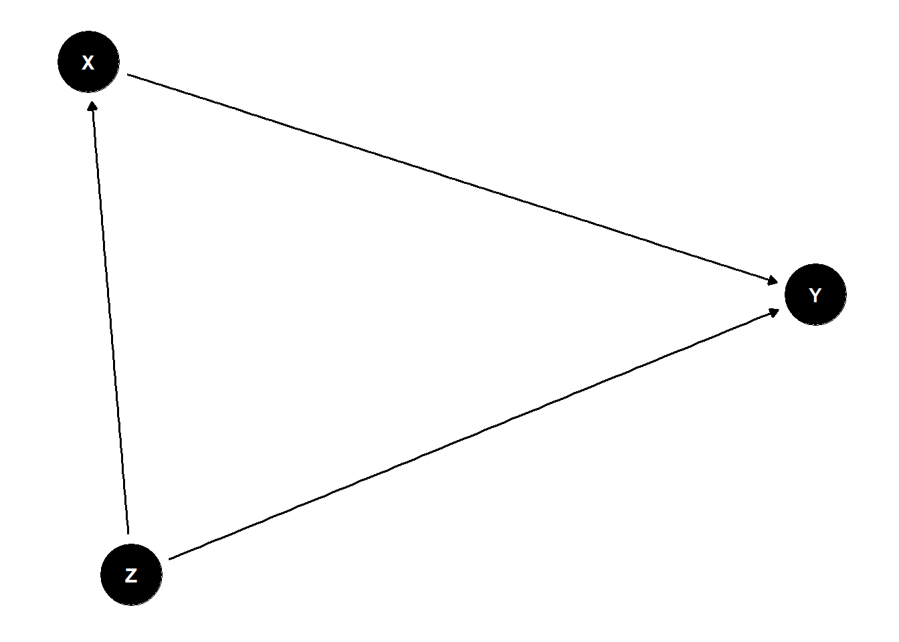
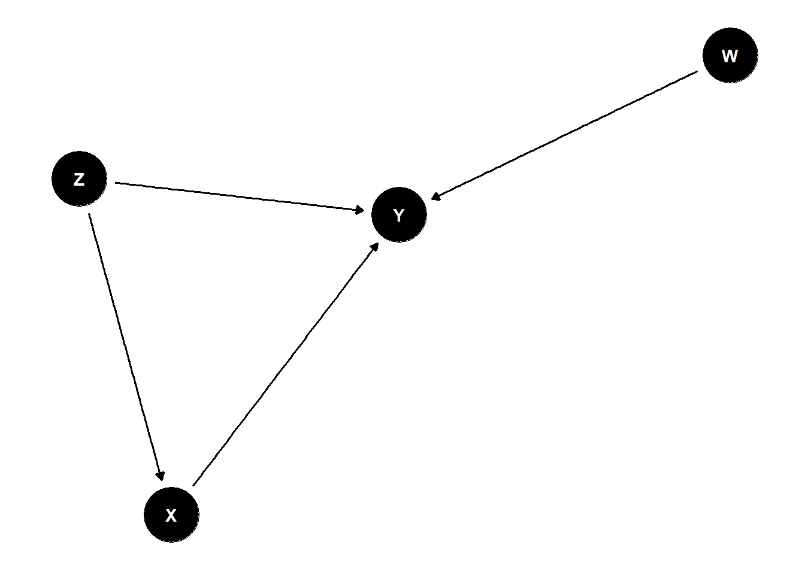

| Types.of.Bias | Description |
|---|---|
| Investigator Bias | Conscious or unconscious preference given to one group over another by the investigator |
| Evaluator Bias | Introduced when an investigator making endpoint-variable measurements favours one group over another. Common with subjective endpoints |
| Performance Bias/ Hawthorne Effect | Introduced when participants know their allocation to a particular group and change their response or behaviour during a particular treatment |
| Selection Bias | Introduced when samples (individuals or groups) are selected for data analysis without proper randomization; includes admission bias and non-response bias, in which case the sample is not representative of the population |
| Ascertainment/ Information Bias | Errors in measurement or classification of patients, includes diagnostic bias and recall bias |
| Allocation Bias | Systematic differences in the allocation of participants to treatment groups and comparison groups, when the investigator knows which treatment is going to be allocated to the next eligible participant |
| Confirmation Bias | Information is processed in a manner consistent with someone’s belief |
| Expectation Bias | Introduced during publication by a personal preference for positive results over negative results when the results deviate from expected outcome |
| Detection Bias | Systematic errors in observation of outcomes in different groups results in detection bias when outcomes in one group are not as vigilantly sought as in the other |
| Attrition bias/loss-to-follow-up bias | Preferential loss-to-follow-up in a particular group leads to attrition bias |
2 Research Methodology and Quality Assurance
In the previous chapter, we mentioned the fundamental steps involved in the research process. As discussed, research is not a linear activity but a dynamic, iterative process where each stage informs the next. The research journey often involves going back and refining earlier steps, based on insights gained during the process.
Building upon that foundation, this chapter focuses specifically on steps in research methodology and the importance of quality assurance at each stage of the research process. Effective research requires careful planning,formulation of research tools, systematic data collection, and rigorous analysis. At every step, it is crucial to consider quality issues such as validity (the accuracy of measurements and conclusions) and reliability (the consistency and reproducibility of results). Researchers must employ strategies to minimize errors and biases to ensure the integrity of their findings.
This chapter outlines the key steps in the research process and highlights common quality issues and checks to ensure the integrity of the study.
2.1 Defining the Research Problem and Hypothesis
2.1.1 What is a Research Question?
A structured question asked by the researcher about a subject of interest based on a problem that the scientific community has not solved.
A well-defined problem statement is critical for focusing the direction of the study and ensuring that the research addresses an important and specific issue. It serves as the foundation for the entire research project and helps guide the researcher’s approach, methodology, and analysis.
The FINER criteria is a useful framework for evaluating the quality of a research question, ensuring that it is well-defined, feasible, and valuable for scientific inquiry. It stands for Feasible, Interesting, Novel, Ethical, and Relevant, and it helps guide researchers in developing focused research questions that are both impactful and rigorous.
Here’s a breakdown of each criterion:
Feasible: The research question should be practical and achievable within the constraints of time, resources, and expertise available. Feasibility involves considering factors such as the availability of data, the sample size required, the methods needed, and the technical skills required to conduct the study. A question that is too broad or complex may be difficult to address within the scope of a single study, while one that is too narrow may lack sufficient data or insight to make meaningful contributions.
Interesting: The research question should be engaging and should capture the interest of the research community. An interesting question sparks curiosity and motivates further exploration. It often addresses a gap in existing knowledge or presents an opportunity to test theories in new or innovative ways. A question that challenges current understanding or has potential for new discoveries can attract attention from scholars and stakeholders alike.
Novel: The question should contribute something new to the field, whether by addressing an under-explored topic, providing new insights into an established issue, or challenging existing assumptions. Novelty can involve applying existing theories or methods in a new context, exploring unanswered questions, or proposing new models or frameworks. Research that brings fresh perspectives or original findings is more likely to have a significant impact on the discipline.
Ethical: A research question must be ethical, meaning it can be studied without compromising participants’ rights, safety, or well-being. Ethical considerations include obtaining informed consent, ensuring privacy and confidentiality, and minimizing harm to participants. Researchers should also consider the broader ethical implications of their research, such as the potential for misuse of results or the societal impact of their findings.
Relevant: The research question should be relevant to the field of study and, ideally, to real-world issues. It should address a problem or gap that is of significant importance to the scientific community, policymakers, practitioners, or the general public. A relevant research question has the potential to contribute to the advancement of knowledge and influence practice, policy, or further research in meaningful ways.
2.2 A Research Question:
Resolves Uncertainty
A well-crafted research question aims to resolve or manage uncertainty within a specific context. In many domains, uncertainty can be a major barrier to effective decision-making, leading to suboptimal outcomes, poor predictions, or risky behaviors. A research question that resolves uncertainty seeks to understand the sources of uncertainty and find methods to reduce it, or at least manage it more effectively.
Details Problem Statement
The problem statement is an explanation of why the research question matters. It defines the core problem that the research is addressing and frames the need for resolving uncertainty. A good problem statement helps clarify the broader implications of the issue at hand, offering both the context of the uncertainty and why it must be addressed.
Narrows Down and Adds Focus
A research question must be focused and specific to ensure it is manageable and can lead to actionable insights. When resolving uncertainty, the question should narrow down the type of uncertainty, the domain of application, and the methods to be used in the study. This narrowing of focus allows the researcher to define the scope of the problem and determine what can realistically be achieved.
Sets Context and Provides Description
The context describes the environment or situation in which the problem exists. It highlights the broader issues around the research question and helps the researcher define the boundaries of the study. Setting context involves explaining why this uncertainty matters and identifying the specific challenges involved.
By addressing each of these four elements, a research question becomes clear, actionable, and grounded in the real-world need to resolve uncertainty in a specific context.
2.3 PICO Framework
Population (P)
The population refers to the group of individuals or subjects who are the focus of the research question. This could involve specific demographics (e.g., age, gender, ethnicity), medical conditions, or particular characteristics that are relevant to the research study.
Targeting the Right Group: Defining the population ensures the research is focused on the group for which the intervention, treatment, or phenomenon under investigation is relevant.
Increases Relevance: By specifying the population, the research question can address the needs or issues of a specific group of people, making the findings more applicable and useful.
Clarifies Scope: It helps narrow down who the study is relevant to, preventing the research from becoming too broad or overly general.
Example: In a study about treatment for asthma, the population might be “children aged 5-12 with moderate asthma.”
Intervention (I)
The intervention refers to the treatment, procedure, or exposure that is being tested or implemented to address the issue or condition in the population. This could be a drug, therapy, lifestyle change, diagnostic test, or preventive measure.
Defines the Focus: The intervention is the key variable of interest in the study. Specifying it clearly helps identify what the study aims to investigate.
Guides Research Design: Knowing the intervention helps determine the methodology (e.g., clinical trial, observational study, cohort study), data collection methods, and analysis approach.
Establishes a Standard: The intervention helps frame what is being tested against existing practices or other alternatives.
Example: For the same asthma study, the intervention might be “inhaled corticosteroid treatment.”
Comparison (C)
The comparison component refers to the baseline or control group to which the intervention is being compared. This could be a placebo, standard treatment, or no treatment at all. Not every research question needs a comparison, but it is particularly important in experimental or clinical trials.
Clarifies Effectiveness: The comparison allows the research to evaluate the effectiveness of the intervention in comparison to other alternatives or no treatment.
Validates Results: Without a comparison group, it would be difficult to attribute observed outcomes specifically to the intervention rather than other factors.
Strengthens Evidence: Including a comparison group increases the internal validity of the study and provides more robust evidence for or against the effectiveness of the intervention.
Example: In the asthma study, the comparison might be “placebo treatment” or “standard asthma inhaler therapy.”
Outcome (O)
The outcome refers to the result or effect that is being measured to determine whether the intervention was effective. Outcomes could include health outcomes (e.g., symptom reduction, recovery time), behavioral outcomes (e.g., adherence to treatment), or diagnostic outcomes (e.g., accuracy of a test).
Measures Effectiveness: Outcomes specify what will be measured to determine if the intervention achieves its goal. They define the success criteria for the study.
Ensures Relevance: Clearly defining outcomes ensures the research question is tied to practical, real-world goals, such as improving patient health, reducing costs, or increasing quality of life.
Guides Data Collection: Understanding what outcome will be measured helps in designing data collection methods, tools, and measurements (e.g., surveys, biomarkers, clinical exams).
Example: In the asthma study, the outcome might be “reduction in asthma attacks” or “improvement in lung function as measured by FEV1 (forced expiratory volume in 1 second).”
Example of a PICO-Based Research Question:
Research Question: “In children aged 5-12 with moderate asthma (P), does inhaled corticosteroid treatment (I) compared to placebo treatment (C) reduce asthma attacks (O)?”
The PICO framework is a vital tool in research question formulation because it provides clarity, specificity, and structure. It helps researchers narrow down their focus, design appropriate methodologies, and ensure that their research is directly addressing a meaningful and answerable problem. PICO ultimately improves the quality of research, ensuring that the results are relevant, reliable, and actionable, particularly in healthcare and clinical settings where decisions have significant consequences.
There are several other frameworks in addition to PICO that are commonly used to structure research questions, especially in healthcare and social science research. These frameworks serve similar purposes. Some of the most frequently used alternatives to PICO include PECO, PIT, PICOT, and others, each with specific applications depending on the type of research being conducted.
PECO (Population, Exposure, Comparison, Outcome) The PECO framework is commonly used in observational or epidemiological studies, particularly those involving Exposures.
PICOT (Population, Intervention, Comparison, Outcome, Time) The PICOT framework is a slightly extended version of the PICO framework, adding a Time component.
PIT (Population, Intervention, Test) The PIT framework is used in Diagnostic Accuracy Tests
Setting, Perspective, Intervention or Phenomenon of Interest, Comparison, Evaluation (SPICE) in Qualitative synthesis
CoCoPop (Factor, disease, symptom or health Condition of interest, the epidemiological indicator used to measure its frequency (prevalence, incidence), the Population or groups at risk as well as the Context/location and time period where relevant)
For better understanding, follow the links below
2.4 The Role of the Literature Review in Research
After formulating a preliminary research question, the next critical step in the research process is conducting a detailed literature review. The purpose of the literature review is not only to summarize existing knowledge but also to refine and strengthen the research question by ensuring it aligns with key criteria that enhance the quality and impact of the research.
At the outset, the literature review helps the researcher define and narrow the research problem by identifying the key issues, controversies, and gaps in the existing literature. This process ensures that the question being posed is not only aligned with current knowledge but also addresses areas where further investigation is needed. The ongoing nature of the literature review is crucial, as it allows the researcher to stay updated on the latest findings, theories, and methods, which may influence or reshape the direction of the research question over time.
A literature review is not a one-time task; rather, it is a dynamic process that evolves throughout the course of the research.
2.4.1 Practical Steps to Perform a Detailed Literature Review:
2.4.1.1 Identify Key Databases and Resources:
Use academic databases and library resources to gather relevant articles, books, and reports.To ensure a comprehensive and efficient literature search, it is essential to identify the key academic databases and resources that are most relevant to your research topic.
Academic databases are digital platforms that allow you to access a wide range of scholarly materials, including journal articles, books, conference papers, and reports. These databases organize and index resources from various disciplines, making them indispensable tools for researchers.
Key Research Databases: Scope, Focus, and Strengths
| Database | Focus | Strength |
|---|---|---|
| Medline | Biomedical and life sciences | Clinical medicine, drug development, healthcare research |
| Embase | Biomedical, pharmacological, clinical | Drug research, clinical trials, European literature, medical devices |
| Web of Science | Multidisciplinary | Citation analysis, research impact, global scope |
| Scopus | Multidisciplinary | Citation analysis, global journal coverage, research impact |
| Cochrane Library | Healthcare and evidence-based medicine | Systematic reviews, clinical trials, evidence-based practice |
| EconLit | Economics | Economic research, economic theory, empirical studies |
| PsycINFO | Psychology and behavioral sciences | Mental health, psychology, social behavior research |
| JSTOR | Humanities and social sciences | Access to older scholarly articles, arts and humanities, social sciences |
These databases provide different types of academic resources tailored to specific research needs, from clinical research to humanities, economics, and global citation analysis. Depending on the nature of your research, you may need to use a combination of these resources.By strategically selecting and utilizing multiple databases, you ensure that you are capturing the most relevant and high-quality sources of information.
2.4.1.2 Define Keywords:
Start by defining the keywords related to your research question. Include synonyms and related terms to ensure a comprehensive search.
Defining keywords is a critical first step in conducting a thorough literature search. Keywords are the specific terms that capture the core concepts of your research question. By carefully selecting the right keywords, you ensure that your search is both focused and comprehensive.
Start by identifying the primary concepts or themes related to your research question.
For example, if your question is about the effectiveness of a new drug for treating diabetes, your primary keywords might include terms like
"diabetes" , "treatment" , "drug" , "efficacy" , "clinical trial"
In addition to the core keywords, it is essential to include synonyms and related terms to broaden your search.
For instance, instead of just using "diabetes" you might also use "type 2 diabetes" "hyperglycemia" or "insulin resistance" to capture various ways in which the condition is described in the literature. Similarly, consider related concepts like “medication,” “pharmacotherapy,” or “drug therapy” to include alternative descriptions of treatment methods.
To ensure a comprehensive search, you should also think about alternative spellings, abbreviations, or terminology used in different regions or by different researchers. For example, in addition to "cancer treatment", you could use "oncology treatment" or even specific terms like "chemotherapy" "radiotherapy" or "immunotherapy" depending on the focus of your research.
By including a broad set of relevant terms, your search will be more likely to uncover all pertinent studies, including those that might use different language or focus on slightly different aspects of the topic. Keep in mind that using the right mix of specific and general keywords will enhance the efficiency of your literature search and improve the quality of your review.
2.4.1.3 Review Systematically:
Organize your search results into categories, such as theoretical frameworks, methodologies, key findings, and gaps in research.
2.4.1.4 Analyze Gaps and Trends:
Identify where there is consensus in the literature and where there are disagreements or areas of uncertainty. Look for patterns, unanswered questions, and areas where further research is needed.
When reviewing the literature, certain patterns may emerge that suggest areas for future research. These include unanswered questions, contradictory results, or findings that raise more questions than answers.
Identifying Patterns:
Recurrent Limitations in Studies: Many studies may highlight the same methodological flaws or gaps in evidence (e.g., small sample sizes, short study durations, lack of control groups), which can indicate areas where the field needs improvement.
Under-Researched Areas: Repeated references to areas that have not been thoroughly studied (e.g., specific populations, settings, or interventions) could highlight opportunities for further research.
Emerging Trends or Technologies: New technologies, data sources, or methodologies may be emerging as relevant to the topic. For example, the use of big data in health research might represent a new and exciting avenue for exploring relationships between variables.
Unanswered Questions and Future Research:
Unresolved Debates: Ongoing debates where evidence remains inconclusive, such as whether a treatment is effective for certain subgroups of patients (e.g., children vs. adults), can guide future studies.
Lack of Generalizability: If studies often focus on narrow or non-representative samples, there may be a need for more research on diverse populations or contexts to ensure findings are generalizable.
Long-Term vs. Short-Term Outcomes: Many studies may focus on short-term results but fail to measure long-term effects of interventions or treatments, highlighting the need for longitudinal studies.
2.4.1.5 Evaluate the Quality of Studies:
Assess the quality and relevance of the studies you find. Pay attention to sample sizes, study design, and the robustness of methodologies.
One can use established tools to assess the quality of individual studies systematically.
Why Use Critical Appraisal Tools?
Assess the quality of studies based on a systematic evaluation of design, methodology, and execution.
Identify potential sources of bias and evaluate the validity of study findings.
Ensure transparency and consistency in evaluating the strength of the evidence.
Improve the reliability of your systematic review by ensuring only the best-quality studies are included.
Useful Websites for Accessing Critical Appraisal Tools:
equator network - Enhancing the QUAlity and Transparency Of health Research
Cochrane Risk of Bias Tool – Official Cochrane website for tools and resources on risk of bias.
ROBINS-I Tool – Access the ROBINS-I tool for non-randomized studies of interventions.
STROBE Statement – Website for the STROBE checklist and resources for reporting observational studies.
CONSORT Statement – Access the CONSORT statement for improving RCT reporting.
CASP Critical Appraisal Tools – CASP website with various checklists for different study designs.
2.4.1.6 Synthesize Findings:
Summarize key findings and insights in a way that identifies gaps and establishes the foundation for your research question.
Summarizing the key findings and insights from the literature helps to build a clear understanding of the current state of knowledge. By identifying gaps and contradictions in the research, you can articulate a research question that addresses these gaps and contributes to advancing knowledge in your field. This process not only justifies the need for your study but also ensures that your research will fill a critical gap in the literature, making a meaningful impact.
2.4.2 Use of Bibliographic Softwares in Literature Review
Once you’ve gathered your references, bibliographic softwares like Zotero, Endnote, Mendeley can help you organize them into categories or groups that make sense for your research. For example, you can categorize articles by themes, methodologies, or findings related to your research question.
During your review, you will likely need to annotate articles, take notes, and highlight key sections or quotes. Bibliographic software allows you to store these annotations and notes within the software itself.Zotero enables note-taking on individual references and allows you to attach PDFs with annotations.
These tools help you identify and remove duplicate entries, ensuring that your reference list remains clean and accurate.
They also help automate citation generation and allow you to apply different citation styles (e.g., APA, MLA, Chicago, Vancouver) based on the requirements of your paper or journal.
If you’re working as part of a research team, collaboration features in these bibliographic tools make it easy to share references, notes, and annotated documents. Zotero allows you to create shared libraries that enable group collaboration. Team members can add, edit, and organize references in real time.
Using bibliographic software, you can automatically generate a final reference list in the correct style. Zotero makes it easy to export your references into a bibliography, either directly into a document or as a standalone file in multiple formats (e.g., Word, BibTeX, RIS).
In this workshop, you will be introduced to one powerful and user-friendly citation manager that helps researchers organize, manage, and cite their sources efficiently, Zotero . It allows you to collect and store references from a wide range of sources, including books, journal articles, and websites, all in one place. It also integrates seamlessly with word processors like Microsoft Word and Google Docs to help you easily insert citations and generate bibliographies in multiple citation styles (APA, MLA, Chicago, etc.).
Benefits of Using Bibliographic Software
Efficiency: Automated tools speed up the process of organizing, citing, and managing references.Accuracy: Reduces errors in citation formatting and ensures consistency in reference lists.Organization: Keeps your references well-structured, making it easier to categorize and retrieve articles.Collaboration: Facilitates teamwork and shared access to references, notes, and documents.Time-Saving: Automatically generates citations and bibliographies, freeing up time for analysis and writing.
2.5 Research Design: Importance and Quality Assurance
After synthesizing the existing literature and identifying gaps, the next crucial step in your research journey is to decide on the research design. The research design serves as the blueprint for how your study will be structured, executed, and analyzed. It is the foundation upon which the reliability, validity, and generalizability of your findings rest.
2.5.1 Why is Choosing the Right Research Design Important?
The research design determines the methodology you will use to investigate your research question. A well-chosen study design ensures that you can effectively address the objectives of your research, minimize bias, and obtain valid, reproducible results.
- Aligning the Design with the Research Question:
The design you choose must be aligned with the nature of your research question. A strong research question often dictates the type of study that will yield the most useful insights.
Exploratory Research Questions: If your research question is exploratory (i.e., seeking to understand a new phenomenon), you might choose a qualitative design (e.g., case studies, interviews, ethnography) that allows you to gather in-depth, context-rich data.
Causal Relationships: If you’re testing hypotheses about cause-and-effect relationships (e.g., does a specific intervention improve outcomes?), you would likely choose a quantitative design such as a randomized controlled trial (RCT), which allows you to assess causal effects through controlled experimentation.
Comparing Groups or Trends: For comparing groups or understanding correlations (e.g., is there a difference in outcomes between two groups?), a cohort study, case-control study, or cross-sectional survey might be appropriate.
- Balancing Feasibility and Rigor:
Every study design has its strengths and limitations, and choosing the right one involves balancing the rigor of the methodology with the practical constraints of your research. A study with a more complex design (e.g., an RCT or longitudinal study) may yield high-quality, robust data, but it could also require more time, resources, and access to participants. On the other hand, a simpler design might be more feasible but could lead to weaker conclusions.
If resources and time are limited, a cross-sectional design (a snapshot at one point in time) may be more feasible, but you may not be able to establish causal relationships.
If you want to ensure high internal validity and test cause-and-effect, you may need to opt for a randomized controlled trial, but this requires a more controlled environment and significant investment.
- Generalizability and Population Relevance:
The design also plays a crucial role in determining how well your findings can be generalized to the broader population.
A randomized controlled trial (RCT) with a well-defined and diverse sample offers high generalizability to the target population.
A case study or focus group may provide deep insights but have limited generalizability beyond the sample studied.
Quality Assurance in the Study Design Stage
Once you’ve selected your study design, it’s crucial to implement quality assurance measures to ensure that your research is rigorous, reliable, and valid. Quality assurance at the design stage ensures that you’re taking steps to reduce bias, control for confounding variables, and adhere to ethical standards.
Let us understand more about bias in the following section on Systematic Error.
2.5.2 Systematic Error
Occurs when the measurement system makes the same kind of mistake every time it measures something. Often happens because of a problem with the tool or the way the experiment or research is carried out. For example, a caliper might be miscalibrated and always show larger widths than they are. Systematic error is a threat to validity of the research
It occurs consistently in the same direction.
Varies in relationship with the actual value of the measurement.
Persistent factor that predictably affects all measurements.
Systematic errors create bias in the data.
Many factors can cause systematic error, including errors in the measurement instrument calibration, a bias in the measurement process, or external factors that influence the measurement process in a consistent non-random manner.
2.5.3 Bias in Research
Bias refers to a systematic tendency to favor one perspective, outcome, or group over others, leading to distortion in research, decision-making, or judgment.
In research, bias can result from various factors, including the way studies are designed, how data is collected, and how results are interpreted. This can lead to inaccurate conclusions that do not reflect the true nature of the subject being studied.
2.5.3.1 Definitions
Deviation of results or inferences from the truth, or processes leading to such deviation. Any trend in the collection, analysis, interpretation, publication, or review of data that can lead to conclusions that are systematically different from the truth.
A process at any stage of inference tending to produce results that depart systematically from true values.
“The Idols of Tribe have their foundation in human nature itself, and in the tribe or race of men. For it is a false assertion that the sense of man is the measure of things. On the contrary, all perceptions as well of the sense as of the mind are according to the measure of the individual and not according to the measure of the universe. And the human understanding is like a false mirror, which, receiving rays irregularly, distorts and discolors the nature of things by mingling its own nature with it.”
- Francis Bacon, Novum Organum
Bacon’s words remind us that our understanding of the world is influenced by who we are and where we come from. In research, this means our personal biases can affect how we design studies, analyze data, and draw conclusions.
2.5.3.2 Major types of Bias distinguished in Research
Selection Bias
Errors due to systematic differences in characteristics between those who are selected for study and those who are not.(Last; Beaglehole)
When comparisons are made between groups of patients that differ in ways other than the main factors under study, that affect the outcome under study.(Fletcher)
When the individuals selected for a study or the process by which they are included in the study leads to a non-representative sample. This bias can distort the results of a study because the sample does not accurately reflect the broader population that the study aims to generalize to. As a result, conclusions drawn from the study may be misleading, since the study group differs in important ways from the population under investigation.
Information Bias/ Measurement Bias
Information bias (also called measurement bias or observation bias) occurs when there is a systematic error in the measurement or collection of data, leading to inaccurate or misclassified information about the exposure, outcome, or other variables in a study. This type of bias can distort the observed relationship between the exposure and outcome, leading to incorrect conclusions.
Information bias typically arises when there is a discrepancy between the true values of variables and how they are measured or recorded. It can happen at any stage of a study, whether it’s during data collection, participant interviews, surveys, clinical examinations, or laboratory tests.
Confounding Bias
In research, identifying true relationships between variables is essential for drawing valid conclusions. However, the process is often complicated by confounding bias, a phenomenon where an external variable called a confounder distorts or misrepresents the true relationship between the variables being studied.
A confounder is a variable that influences both the independent variable (the cause) and the dependent variable (the effect), creating a false impression of a relationship. This can lead to misleading results, making it difficult to establish cause-and-effect links with certainty.
Recognizing and controlling for confounding bias is critical to ensuring the validity of research findings.
A Confounder
Is associated with both the disease and the exposure
is unequally distributed between the groups
Should be working independently and not as part of the proposed exposure-health outcome pathway
Handling Confounding
At the Stage of Study Design:
Randomization: Randomization is a technique used during study design to assign participants to different groups in a way that ensures each participant has an equal chance of being assigned to any group, minimizing the potential for confounding variables to affect the results.
Restriction: Restriction involves limiting the study population to individuals who meet certain criteria, such as age range or disease stage, in order to reduce the potential impact of confounders by controlling for specific variables that may influence the outcome.
Matching: Matching is a method where participants in different groups are paired based on similar characteristics (e.g., age, gender, baseline health status) to control for confounding factors, ensuring that these variables are equally distributed across the groups.
At the Stage of Analysis
Stratification: Stratification is a technique used during the analysis phase of a study, where the data is divided into subgroups (strata) based on a particular confounder, allowing the researcher to assess the relationship between the exposure and outcome within each stratum, thus controlling for the confounding effect.
Regression Adjustment: Adjustment refers to statistical techniques, such as regression analysis, that are used during data analysis to control for confounders by statistically accounting for their potential influence on the relationship between the exposure and outcome variables.
2.5.4 Table enlisting different types of Bias
2.5.4.1 Directed Acyclic Graph
Directed Acyclic Graph, DAG is a graphical representation of the relationships between variables in a study, where each node represents a variable, and each directed edge (arrow) represents a causal relationship between two variables. The acyclic nature of the graph means there are no feedback loops, so the graph doesn’t contain any cycles, no variable can cause itself, directly or indirectly, through a series of causal links.
DAGs are used to visually represent relationships between variables or components in a system, making it easier to understand and manage potential sources of confounding and errors.
In DAG, Causal Effect of X on Y is given by:

DAG Terminologies to Know
Node (Vertex)
A node represents a variable in the system. It could be an independent variable (e.g., treatment), dependent variable (e.g., outcome), or a latent variable (e.g., an unobserved factor).
Edge (Arrow)
An edge or arrow connects two nodes, indicating the direction of causality. The arrow points from the cause (parent node) to the effect (child node).
Confounder
A confounder is a variable that influences both the independent variable (cause) and the dependent variable (effect), creating a spurious association between them. If not controlled for, it can bias the results.
Example: In a study of smoking (X) and lung cancer (Y), age (Z) might be a confounder because it affects both smoking habits and cancer risk.
In the figure below, Z confounds the relationship between X and Y

Collider
A collider is a variable that is caused by two other variables. Conditioning on a collider (i.e., adjusting for it) can induce bias and lead to incorrect conclusions (this is called collider bias).
Example: A collider could be “health checkups,” which is influenced by both smoking and exercise.
In the figure below, Z is a collider between X and Y
Mediator
A mediator is a variable that lies on the causal pathway between the independent and dependent variables. It explains the mechanism by which the independent variable influences the dependent variable.
Example: In the smoking and lung cancer relationship, nicotine addiction could be a mediator that helps explain how smoking leads to cancer.
In the figure below, M mediates the relationship between X and Y
Parent and Child Nodes:
A parent node is a variable that has arrows pointing into it (it is influenced by other variables).
A child node is a variable that has arrows pointing out of it (it influences other variables).
Path A path is a sequence of edges (arrows) that connect nodes in a DAG. A path represents a potential causal relationship.
Backdoor Path
A backdoor path occurs when a variable creates a spurious relationship between the independent and dependent variable. Identifying and blocking backdoor paths is key to ensuring valid causal inference.
Utilities of DAG
Visualize the causal relationships between variables.
Identify potential confounders and backdoor paths that could bias results.
Guide decisions on which variables to control for in the analysis.
Avoid over-adjustment and collider bias by clarifying the causal structure.
Enhance the transparency of causal assumptions.
An Example of DAG is presented here:

2.5.5 Quality Assurance in the Stage of Tool Preparation
Once the research question is formulated, literature review carried out, and research design established, the next critical step is to decide on the variables to measure in your study. Identifying these variables is essential because they directly relate to the research question and guide the data collection process.
However, it’s not enough to simply choose the variables — ensuring that the measurement of these variables is valid is paramount to the integrity and reliability of your study.
2.5.5.1 Why is Measurement Validity Crucial?
Measurement validity refers to the degree to which the tool or instrument you use accurately measures the variables you intend to assess. If a measurement tool is invalid, the results you obtain could be inaccurate or misleading, potentially leading to incorrect conclusions about the relationships between variables. Valid measurements ensure that your study is truly capturing what you aim to measure, providing reliable data that can support meaningful interpretations and conclusions.
2.5.5.2 Types of Measurement Validity
There are several types of measurement validity that are critical to consider when designing your research tools
Content Validity: This refers to the extent to which the measurement tool covers the entire range of the concept or variable it is meant to measure.
For example, if you’re measuring depression using a questionnaire, you need to ensure that the items in the tool comprehensively cover all aspects of depression, such as emotional, cognitive, and behavioral symptoms.
Example: “To measure anxiety in adolescents, the tool should include questions that assess both physical symptoms (e.g., restlessness, tension) and psychological symptoms (e.g., excessive worry, fear).”
Construct Validity: Construct validity assesses whether the measurement tool truly measures the theoretical construct it claims to measure, and not something else. It involves testing the tool against related measures and confirming that it behaves as expected. Construct validity can be further divided into:
Convergent Validity: The degree to which the measurement tool correlates with other tools that measure the same or similar constructs.
Discriminant Validity: The degree to which the tool does not correlate with measures of different, unrelated constructs.
Example: “If we are measuring self-esteem, a valid tool should show a positive correlation with other established measures of self-esteem and a weak or no correlation with unrelated constructs, such as depression.”
Criterion-Related Validity: Criterion-related validity refers to how well one measure predicts an outcome based on another measure. This can be divided into two types:
Concurrent Validity: The degree to which a measurement tool correlates with another tool measuring the same construct at the same time.
Predictive Validity: The ability of a tool to predict future outcomes or behaviors based on the measurements it provides.
Example: “A valid test of academic achievement should predict future grades or performance in academic settings.”
Face Validity: Although not as rigorous as other types of validity, face validity refers to whether the measurement tool appears, on the surface, to measure what it is intended to measure. It’s important for ensuring that stakeholders (e.g., participants, practitioners, or funders) perceive the tool as credible and appropriate.
Example: “If you are developing a tool to measure workplace stress, ensure that it includes questions about work environment, workload, and interpersonal relationships — all factors that individuals intuitively associate with stress.”
Designing Valid Measurement Tools
When designing your tool for measuring the identified variables, there are several steps you can take to ensure measurement validity:
Use Established Instruments: Whenever possible, use previously validated instruments or questionnaires that have been tested for reliability and validity in similar contexts. This saves time and effort and increases the credibility of your findings.
Pilot Testing: Before deploying your measurement tool in the main study, conduct pilot testing with a smaller sample. This will help you identify potential issues with the tool (e.g., unclear questions, misinterpretation, irrelevant items) and make adjustments as necessary.
Expert Review: Seek feedback from experts in the field to review your measurement tool. Their input can help ensure that the instrument adequately captures all relevant aspects of the variable you’re studying.
Ongoing Validation: Measurement validity is not a one-time check but an ongoing process. Regularly assess the validity of your tools as part of the study, especially when measuring complex or multi-faceted constructs.
A valid measurement tool is a cornerstone of a sound research design, ensuring that your study’s findings are credible and that you can draw meaningful conclusions to answer your research question.
2.5.5.3 Ensuring Reliability in the Stage of Study Tool Preparation
When preparing a study tool, ensuring reliability is essential to guarantee that your measurements are consistent, stable, and trustworthy across time and different contexts. In research, reliability refers to the degree to which a tool consistently measures a construct, free from random errors, and provides reproducible results. Without reliability, even a valid tool will not produce dependable findings.
Random Error
Occurs due to chance. Even if we do everything correctly for each measurement, we’ll get slightly different results when measuring the same item multiple times. Random error is a threat to reliablity of the research.
Natural variability in the measurement process.
Unpredictable and occurs equally in both directions
Caused by factors such as limitations in the measuring instrument, fluctuations in environmental conditions, and slight procedural variations.
Less random error, more precise the data
Statisticians often refer to random error as “noise” because it can interfere with the true value (or “signal”) of what you’re trying to measure.
How to reduce Random Error?
Random error is unavoidable in research, even if you try to control everything perfectly. However, there are simple ways to reduce it, such as:
Take repeated measurements
Increase sample size
Increase the precision of measuring instruments
Control other variables
Internal Consistency
Internal consistency refers to the extent to which all items within a measurement tool (e.g., survey, questionnaire) measure the same underlying construct. A tool is considered reliable if the individual items that are meant to assess a single variable (e.g., depression, anxiety) are highly correlated with each other.
How to assess internal consistency:
Cronbach’s Alpha is the most common statistic used to measure internal consistency. A Cronbach’s Alpha value greater than 0.7 typically indicates good internal consistency, though values can vary depending on the context and field of research. For multidimensional tools, you may assess internal consistency for each subscale separately.
Example: If you’re using a questionnaire with multiple items to measure depression, internal consistency ensures that all items (e.g., sadness, lack of interest, sleep disturbances) are measuring depression and not unrelated constructs.
Action: Ensure that the items on your tool are logically related and reflect different aspects of the same construct. If necessary, revise or eliminate poorly performing items.
Test-Retest Reliability
Test-retest reliability refers to the consistency of a measurement tool over time. A tool with high test-retest reliability should yield similar results when used on the same participants at different points in time (with a reasonable interval between tests).
How to assess test-retest reliability:
Administer the same tool to the same participants on two separate occasions (e.g., two weeks apart) and calculate the correlation between the two sets of results. A high correlation (e.g., r > 0.8) indicates good test-retest reliability.
Example: If you’re using a personality assessment tool, test-retest reliability ensures that a participant’s personality score remains stable over time, assuming no major life changes.
Action: When designing your tool, consider factors that might influence the stability of the measure, such as the nature of the construct being measured (some variables, like mood, can fluctuate more than stable traits, like intelligence).
Inter-Rater Reliability (or Inter-Observer Reliability)
Inter-rater reliability refers to the degree of agreement or consistency between different raters, observers, or data collectors who are measuring the same phenomenon. High inter-rater reliability ensures that the measurement tool produces consistent results, regardless of who is administering it.
How to assess inter-rater reliability:
Cohen’s Kappa or Intraclass Correlation Coefficient (ICC) are commonly used statistical methods to measure the agreement between raters. These values range from 0 (no agreement) to 1 (perfect agreement), with higher values indicating stronger reliability.
Example: If your tool involves observational data (e.g., coding behaviors or symptoms), inter-rater reliability ensures that different raters observe and score the behaviors consistently.
Action: Provide clear guidelines and training for raters/observers to ensure they are using the tool consistently. You can also conduct periodic checks to assess and improve rater agreement.
Parallel-Forms Reliability
Parallel-forms reliability refers to the consistency of scores between two different versions (forms) of the same tool, which are designed to be equivalent in terms of content and difficulty.
How to assess parallel-forms reliability:
Administer both forms of the tool to the same participants within a short time frame. The correlation between the two forms should be high to demonstrate that the forms are measuring the same construct consistently.
Example: If you’re designing a math aptitude test with multiple versions to avoid practice effects, parallel-forms reliability ensures that the different versions of the test provide equivalent results.
Action: When creating parallel forms, ensure that both versions cover the same content areas in a balanced way and are equivalent in terms of difficulty, format, and scoring.
Split-Half Reliability
Split-half reliability involves splitting the tool into two halves (often odd- and even-numbered items) and checking whether the two halves produce consistent results. This is useful for ensuring internal consistency when you have a long tool or survey.
How to assess split-half reliability:
Divide the tool in half (either randomly or using a logical pattern), and then calculate the correlation between the two halves. A high correlation indicates good split-half reliability. Often, this method is used to estimate internal consistency in the absence of more complex measures like Cronbach’s Alpha.
Example: In a questionnaire with 20 items, you could split it into two sets of 10 items (e.g., odd vs. even) and compare the consistency of results across the two sets.
Action: Ensure that the two halves of your tool are equivalent in terms of content. If there is a significant difference in difficulty between the two halves, reliability may be compromised.
Reliability in the Context of the Population
Reliability can vary across different populations or settings, so it’s essential to consider the target population when evaluating reliability. A tool that is highly reliable in one population might not be as reliable in another due to contextual differences, such as cultural or environmental factors.
Example: A psychological assessment tool that is highly reliable in a Western context may not perform as reliably in a non-Western cultural setting due to differences in language, norms, or expectations.
Action: Consider performing reliability assessments with diverse samples or under different conditions to ensure the tool’s reliability is robust across your target population.
2.6 Sampling Design & Data Collection
2.6.1 Sampling Design
Sampling design refers to the process of selecting a subset (sample) from a larger population for the purpose of making inferences or conclusions about the whole population. A well-thought-out sampling design is crucial to ensure that the sample accurately represents the population and that the study results are valid.
Key Types of Sampling Designs:
- Probability Sampling:
Every individual in the population has a known, non-zero chance of being selected. This is essential for generalizability and unbiased results.
Simple Random Sampling: Each unit in the population has an equal chance of being selected.
Systematic Random Sampling: A sample is selected by choosing every nth individual from a list of the population.
Stratified Random Sampling: The population is divided into subgroups (strata) based on a specific characteristic, and samples are randomly selected from each subgroup.
Cluster Sampling: The population is divided into clusters (groups), and entire clusters are randomly selected for study, often used when the population is spread over a large geographic area.
Cluster sampling is an effective and cost-efficient sampling method when dealing with large, geographically dispersed populations. However, it comes with a sampling effect that can reduce the precision of the results. The intra-cluster correlation (the similarity within clusters) and the design effect (the increased sampling error) are key factors to consider. By understanding and managing these effects through strategies like increasing the number of clusters or using random sampling within clusters, researchers can improve the accuracy and reliability of their findings.
- Non-Probability Sampling:
Not every individual has a known or equal chance of being selected. These methods can introduce bias but may be used in exploratory or qualitative research. Types include:
Convenience Sampling: Selecting individuals who are easiest to access.
Judgmental (Purposive) Sampling: The researcher uses their judgment to select individuals that are most likely to provide relevant insights.
Snowball Sampling: A technique where current study participants refer other participants, commonly used in studies of hard-to-reach populations.
Considerations in Sampling Design:
Sample Size: Determining the appropriate sample size is critical. Too small a sample may lack power to detect significant differences, while too large a sample could be costly and unnecessary.
Representativeness: The sample should be representative of the population, minimizing bias and ensuring that results can be generalized.
Sampling Frame: The list or method used to identify and select participants should be comprehensive and accurate, ensuring that no important subgroup is excluded.
2.6.2 Data Collection Methods
Data collection is the systematic process of gathering and measuring information from a variety of sources to answer research questions or test hypotheses. The choice of data collection methods depends on the research design, objectives, and available resources.
Common Data Collection Methods:
Surveys and Questionnaires: One of the most common methods for collecting data, especially for quantitative research. Surveys can be administered in person, by phone, online, or through mail. Questions may be closed-ended (e.g., multiple-choice, Likert scales) or open-ended (requiring written responses).
Interviews: In-depth interviews (structured, semi-structured, or unstructured) are used in qualitative research to collect detailed, subjective data directly from participants.
Focus Groups: Group interviews designed to generate discussion around specific topics, commonly used in qualitative research to gain insights into participants’ views and opinions.
Observational Methods: Observing behaviors in a natural or controlled environment. This method is often used in social sciences or field-based research.
Experimental Methods: Controlled experiments where data is collected in response to manipulating an independent variable and observing its effect on the dependent variable.
Secondary Data Analysis: Using existing data from previous studies, reports, or databases, instead of primary data collection, to answer research questions.
2.6.3 Online Data Collection Techniques in the Research Process
Online data collection techniques have become increasingly integral to modern research. These methods leverage digital platforms and tools to gather data from participants, often offering advantages in terms of cost, efficiency, reach and the ability to gather high-quality, reliable data. With online tools, data is captured in real time, reducing the time spent on data entry and allowing researchers to begin analysis more quickly. Online data collection offers greater convenience for participants, which can improve response rates and data quality.
Accuracy and Reduced Human Error
Online data collection reduces the likelihood of data entry errors or misinterpretation by researchers, as responses are automatically recorded and stored. Automated systems reduce the risk of interviewer bias or inconsistencies in how questions are asked or data is recorded.
2.7 Digital Data Collection Platforms
In today’s research landscape, online data collection has become a pivotal method for gathering data from diverse populations. Various platforms allow researchers to collect survey responses, interview data, and field observations efficiently. These platforms offer features such as automated data entry, real-time responses, and easy data management.
Few most commonly used online data collection tools, with their links for further exploration is provided here.
Open Data Kit (ODK) is an open-source suite of tools designed to facilitate data collection, management, and analysis in field settings, especially in resource-limited or remote areas. It allows users to create and fill out digital forms, typically on mobile devices, without the need for an internet connection.ODK supports text, images, audio, GPS coordinates, and other multimedia, making it ideal for various types of field research.
ODK will be introduced in this workshop as a powerful tool for data collection, especially for projects that involve remote areas, mobile data collection, or complex surveys.
SurveyMonkey is a popular platform for creating and distributing surveys. It offers a variety of templates, question types, and powerful data analysis tools. Researchers can customize surveys, collect responses, and analyze data in real time. SurveyMonkey is widely used for customer feedback, academic research, and market research.
Google Forms is a free, easy-to-use tool for creating surveys and forms. Integrated with Google Drive, it allows for seamless data collection and storage. Google Forms provides basic question types, automatic data collection in Google Sheets, and options to customize the survey appearance.
Qualtrics is an advanced online survey platform that caters to both academic research and enterprise needs. It offers a range of features for designing complex surveys, conducting market research, and performing data analysis. Qualtrics also integrates with many analytics tools, making it suitable for high-level research projects.
RedCap is a secure web application for building and managing online surveys and databases. It is commonly used in academic and healthcare research for collecting sensitive data. RedCap provides options for data validation, audit trails, and compliance with data protection regulations.
Many online survey tools offer direct integration with statistical software or data visualization tools, simplifying the analysis process. Online data collection techniques offer tools that help researchers maintain control over the data collection process, ensuring high-quality, reliable data.
Many platforms automatically check for incomplete, inconsistent, or illogical responses, ensuring that the data is clean and ready for analysis.With online platforms, data management becomes more streamlined. Digital data can be easily stored, backed up, and accessed when needed, offering greater organizational efficiency.
All data can be stored in one place, making it easier for researchers to manage and retrieve responses. Online platforms often include encryption and other security features to protect the confidentiality and integrity of sensitive data.
2.8 Data Analysis
2.8.1 Data Cleaning and Preparation
Missing Data: Handle missing data appropriately, either through imputation or by excluding incomplete records, depending on the nature and extent of the missing data.Outlier Detection: Identify and assess outliers for validity. Decide whether they should be included or excluded based on their legitimacy.Consistent Formatting: Standardize formats for variables, units, and categorical data to ensure consistency across the dataset.
Risks to Address:
Data Dredging: Occurs when analysts manipulate the dataset by removing or altering data points to fit a desired outcome.
2.8.2 Exploratory Data Analysis (EDA)
Visualizations: Use graphs (e.g., histograms, box plots) to explore data distributions, trends, and correlations. Visual checks can often reveal anomalies or issues that require attention.Descriptive Statistics: Calculate summary statistics (mean, median, standard deviation) to get a sense of the central tendency and variability in the data.Data Segmentation: Check for consistent patterns or discrepancies across subgroups to identify potential biases in data.
Risks to Address:
Overfitting: During EDA, there’s a risk of “cherry-picking” patterns that seem significant, even if they aren’t. Avoid jumping to conclusions based on visualizations without statistical testing.EDA helps in identifying and correcting outliers, misclassifications, or other random errors before deeper analysis.
2.8.3 Modeling and Statistical Analysis
Multiple Testing Adjustments: When conducting multiple statistical tests, use corrections (e.g., Bonferroni or False Discovery Rate) to adjust for the increased likelihood of Type I errors (false positives).Robust Statistical Methods: Use robust models and statistical techniques that account for potential biases, such as mixed-effects models, regression with robust standard errors, etc.
Risks to Address:
p-hacking: Ensure a clear and predefined analytical approach. Avoid the temptation to change the analysis after seeing preliminary results (e.g., changing the model to find significant p-values).Overfitting: Avoid creating overly complex models that fit the data too closely and may not generalize well to new datasets. Use techniques like cross-validation or regularization to prevent this.
2.8.4 Interpretation and Reporting
Transparent Reporting: Clearly report all methods, assumptions, and limitations of your analysis. This includes specifying the analytical tools and model choices used.Effect Size Reporting: Report effect sizes (e.g., Cohen’s d, R-squared) in addition to p-values, to provide a fuller understanding of the magnitude of any effects.Confidence Intervals: Provide confidence intervals for estimates to reflect the uncertainty in your results.
2.8.5 R for Data Analysis
Using open source statistical programming language like R, can significantly increase the quality of research by automating data analysis and ensuring consistent application of methods. R’s scripting capabilities allow researchers to document every step of the analysis, making it reproducible and transparent. Through built-in functions for data cleaning, statistical modeling, and visualization, R helps identify potential issues such as outliers or violations of assumptions early on. Additionally, R enables researchers to apply rigorous quality control measures, like cross-validation and multiple testing corrections, which ensure more robust and reliable results in research.
In the following sessions, we will explore in detail how R enhances the quality of research by enabling rigorous analysis, ensuring reproducibility, and minimizing errors through automated workflows. R provides a comprehensive set of tools for data cleaning, statistical modeling, visualization, and quality control, which collectively support robust and transparent research practices. We’ll delve into how R facilitates reproducible research, allowing analyses to be easily shared, validated, and updated.
Join us as we explore the power of R in creating high-quality, reliable, and reproducible research outcomes.